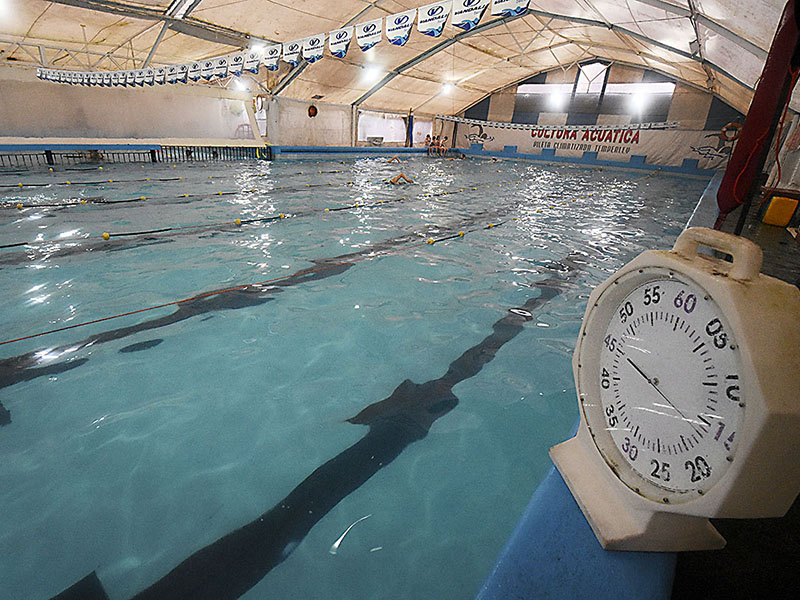
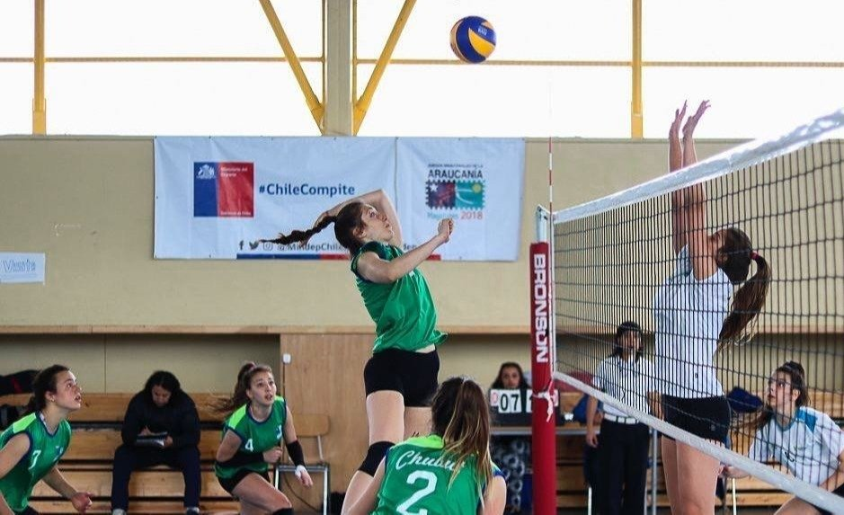
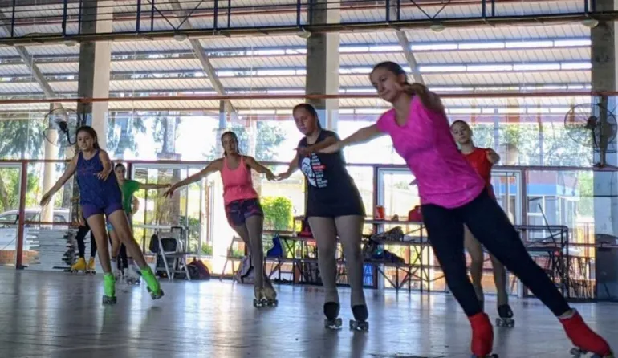
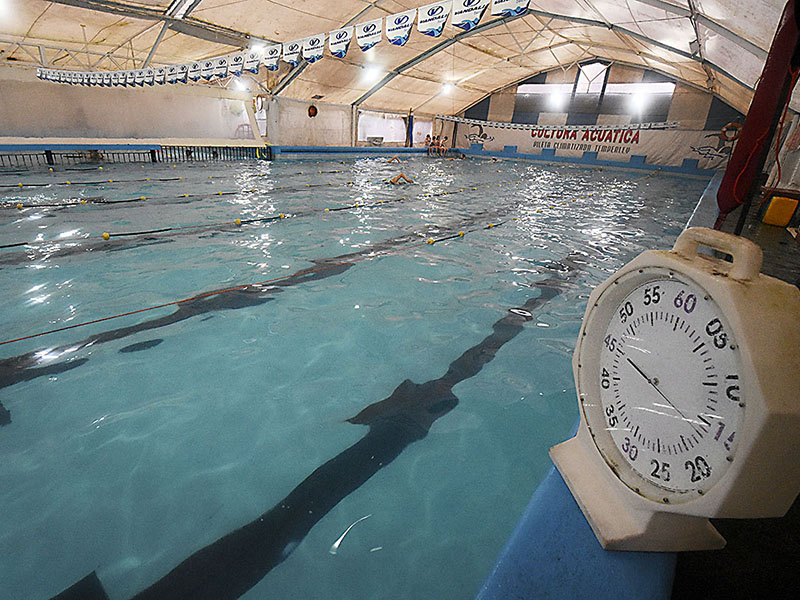
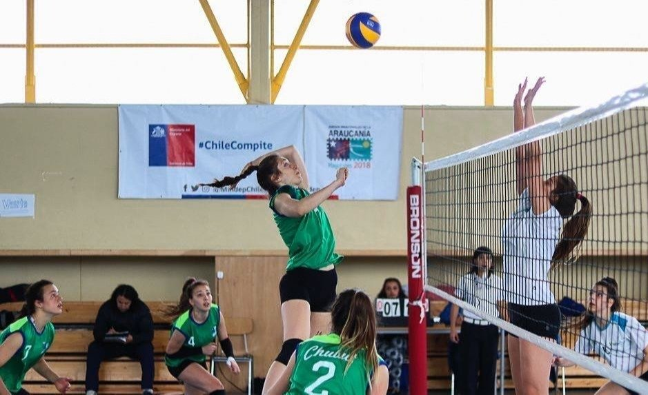
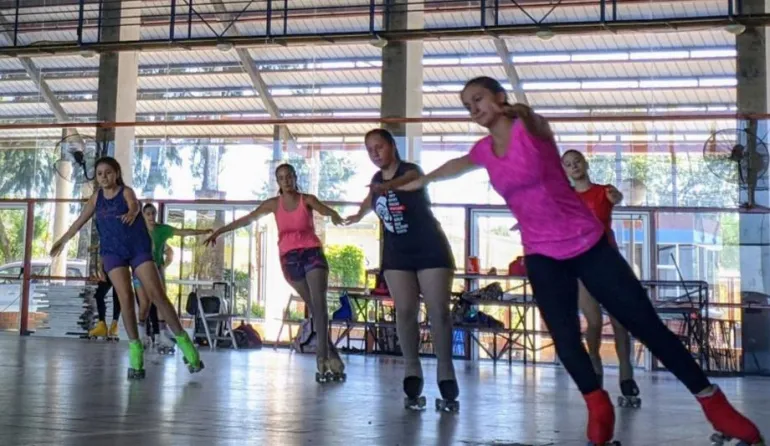

Comisión Directiva
Presidente: Sr. Luis Jorge Spahn
- Vice Pte 1° Edgardo Zin
- Vice Pte 2° Fabián Brasca
- Vice Pre 3° Rafael Perez del Viso
- Sec. General Andrés Monsalvo
- Tesorero Jorge Ciceri
Comisión de Hacienda
- 1° Natalia Taborda
- 2° Andrés Valenti
- 3° Leonardo Ambroggio
- 4° Marcelo Piazza
- 5° Germán Dipangracio
Comisión Revisora de Cuentas
- 1° Fabio Giudici
- 2° Juan Tombolato
- Vice Pre 3° Rafael Perez del Viso
- 3° Cecilia Scarafia
- 4° César Miretti (vocero)
Historia
Fue fundado el 24 de junio de 1934 por un grupo de entusiastas de la colectividad española,15 particularmente residentes en la zona de Haedo,16 entre los que se encontraban David González, Jesús García y Perfecto Martínez, con el objetivo de practicar deportes, no solo fútbol, sino diferentes actividades como básquet, vóley, pelota paleta y esgrima, entre otros. Se afilió a la Asociación del Fútbol Argentino en 1959 y comenzó a participar en la Tercera División de Ascenso.17 3 El club tuvo estadio propio en sus primeros años en la AFA en Ramos Mejía, pero a fines de la década de 1960 lo perdió,3 y desde entonces alquiló cancha para hacer de local.6 Participó ininterrumpidamente en Primera D desde 1959 hasta el torneo 1988-89, cuando fue desafiliado por una temporada, lo que ocurrió en otras cuatro oportunidades: 1994-95, 2004-05, 2006-07 y 2015. La primera oportunidad de ascenso la perdió en 1965, cuando disputó un desempate frente a General Mitre -ganador que ascendió a Primera C- y Piraña, en el Gasómetro.6 Tras haber estado un año sin competir, Centro Español armó un equipo de cara a la temporada 2008/09 para lograr el ascenso. Sin embargo, quedó bastante lejos de lograr el objetivo tanto en ese como en los siguientes torneos, a pesar de un par de buenas campañas en los últimos años, con Mariano Fernández como director técnico.
Gerenciamiento
En el año 2006, comenzó a circular el rumor de un posible gerenciamiento. Se acercaron varios grupos inversores, entre ellos Enrique Sacco quien quería llevar el club a Bolívar, pero no se llegó buen puerto con las negociaciones.4 Finalmente el club fue gerenciado por el empresario Sergio Sack y su equipo, quienes se comprometieron en 2010 a finalizar las instalaciones, incluido el estadio.18 Durante la etapa gerenciada, se armaron algunos planteles competitivos que concentraban en la casa quinta del gerenciador, lo que era algo poco frecuente para la categoría. Sin embargo, el equipo no llegó a conseguir el ascenso y a mediados de 2014, la Comisión Directiva decidió cancelar el gerenciamiento por incumplimiento de contrato.120
Nueva etapa
En la nueva etapa sin administración privada, la Comisión Directiva se comprometió a construir la nueva sede del club, con cancha reglamentaria, vestuarios, administración, dos canchas auxiliares, pista de atletismo, canchas de hockey y canchas de baby. Dicha construcción fue a través de un convenio entre el Club y Procrear a través de la sesión de los derechos adquiridos por el Sr. Eduardo Lomolino que cedió al club dichos derechos y se comprometió a realizarla en el predio de Moron y con plazo de finalización entre los meses de diciembre de 2014 y enero de 2015. A pesar de ello,al día de la fecha no ha habido grandes avances al respecto, al menos en lo que respecta a las obras relativas al fútbol.22 En la temporada 2015, El Gallego sacó solo 3 puntos en 30 fechas, producto de 3 empates y 27 derrotas, siendo una de sus peores campañas, lo que condenó al equipo a quedar desafiliado por una temporada. Al volver de la desafiliación en la temporada 2016-17, volvió a desafiliarse al perder 1-3 contra Victoriano Arenas, dos fechas antes del final del torneo. No obstante por medio de una resolución la AFA anuló el descenso de Centro Español considerando la poca cantidad de equipos participantes en la Primera D, por lo cual el club continuó participando en la última categoría del fútbol argentino. A partir de ese momento y hasta la actualidad, no ha vuelto a haber desafiliaciones en la categoría, con lo cual Centro Español es, por el momento, el último club en haber quedado desafiliado.
Campeón del Apertura 2022 de la Primera D
El campeonato Apertura 2022 de la Primera D fue uno de los más curiosos disputados en la historia de la categoría. Con la participación de solamente 11 equipos Centro Español se coronó campeón por primera vez en su historia de un campeonato oficial de la AFA. Con un sólido equipo logró un hito futbolístico en sus 88 años de historia. El partido consagratorio se jugó el 9 de julio de 2022 de la fecha 10 en la cancha de Defensores de Cambaceres en Ensenada. Empataron 1 a 1 y ese empate permitió que Centro salga campeón. La formación de Centro Español contaba con: Forgaral, Rosales, Gayoso, Larrosa y Alani, S.Gómez, Castañeda, Galván y Durso, Rouco y N. Lopez Director técnico:Espinoza-Fukuoka. No obstante en el siguiente torneo (Clausura 2022) Centro Español terminó ultimo con solo 4 puntos producto de cuatro empates. Al haber ganado el Apertura a principios de año obtuvo el derecho de jugar una final con el equipo campeón del Clausura 2022 que fue Yupanqui. Luego de un empate cero a cero en cancha de Ituzaingó (donde Centro fue local) el partido definitorio se jugó en el nuevo reducto de Yupanqui en Ciudad Evita donde el local ganó 1 a 0 en tiempo suplementario y ascendió a la Primera C. De esta manera Centro Español perdió una chance histórica de lograr el ascenso en una categoría donde nunca pudo jugar.
Instalaciones del club
Nuestras instalaciones son espacios confiables y bien dotados, para que nuestros asociados disfruten de un lugar en el que puedan practicar su deporte favorito cada día, con fácil acceso y dentro de la ciudad. Teniendo a su disposición nuestras instalaciones para la realización de eventos y actividades deportivas, recreativas, culturales y sociales. Contamos con una cancha cubierta de Baby Fútbol de 5 contra 5 de 24 x 16 mts, con tribunas de Local y tribunas de Visitante. 2 Vestuarios Masculinos (Local y Visitante) y 1 Vestuario Femenino. Además de Gimnasio con los elementos necesarios para el entrenamiento de boxeo. El Buffet con salón comedor, se encuentra abierto de 9 a 24hs todos los días. Siendo socio del Club accedes con descuento al alquiler del quincho cerrado con cómodas instalaciones de casi 50 m2, con capacidad para 60 personas sentadas, con 3 parrillas, equipado con mesas y sillas, televisor, freezer, heladera, horno a gas, 2 baños. Como socio también cuentas con descuentos en el alquiler del salón de eventos, que cuenta con cómodas instalaciones de casi 200 m2 que se adapta, mediante distintas alternativas de equipamiento y decoración, al tipo de evento que usted esté planeando, ofreciendo una capacidad para 180 personas, dispone de acondicionadores de aire, cuenta con una barra de tragos y está equipado con 2 freezer, heladera, cocina industrial, cabina de disc-jockey, parrilla de luces de colores, mesas y sillas. Para que disfrutes de todo tipo de evento de día o de noche en tu Club.


 




